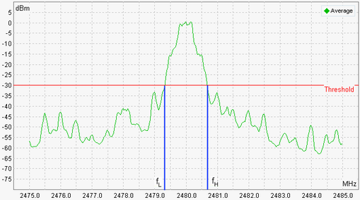

Spectrum Frequency Range Results (BR)
The scalar output fields view show an overview of the frequency range results.
Bluetooth multi-evaluation: frequency range results (BR)
The frequency range is the width of the frequency band around the center frequency where the transmit power drops by less than specified threshold value. The frequencies fH and fL are measured, where:
- "fH" denotes the highest frequency at which the transmit power drops below the specified threshold.
- "fL" denotes the smallest frequency at which the transmit power drops below the specified threshold.
- Nominal power: average burst power during the carrier-on state, measured within the "Basic Rate Filter Bandwidth".
The frequency results are based on the "Average" spectral trace and obtained using a 100 kHz resolution bandwidth. Results fL and fH must be within the allowed frequency band 2.4 GHz to 2.4835 GHz. An example is shown below.

Definition of frequency range measurement
Read "Frequency Range Measurement" to measure the spectrum frequency range in line with the test specification for Bluetooth wireless technology. |
For query of the results via remote control, see "Spectrum Measurement Results (BR)".